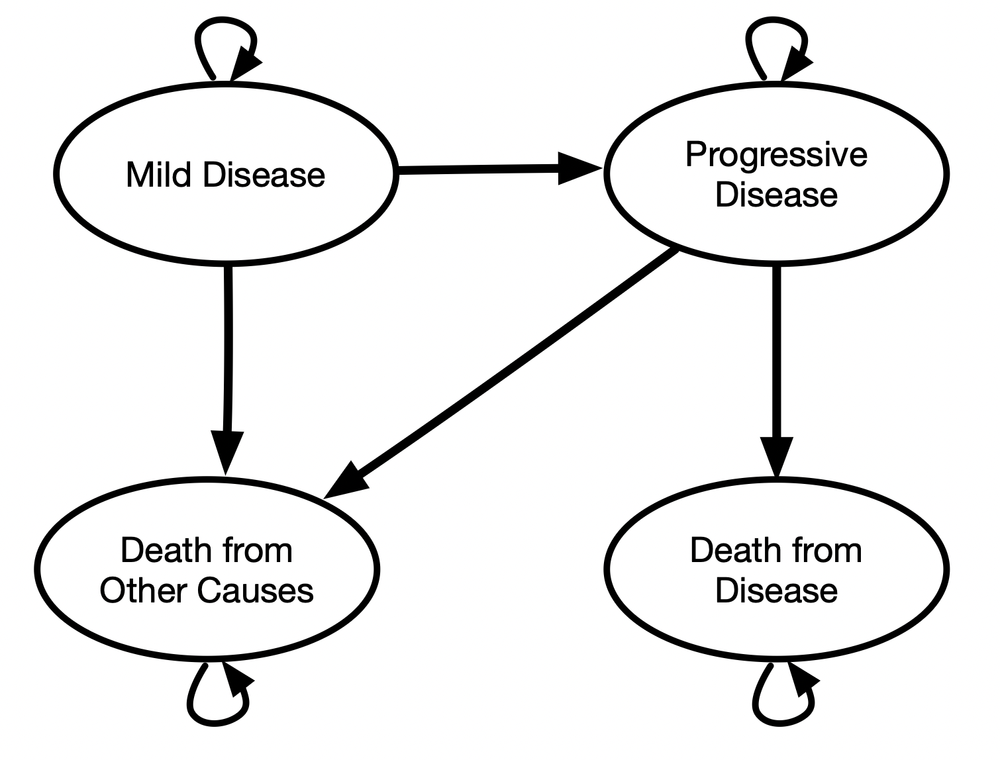

Modeling DALYs in Amua
Learning Objectives
- Review of DALY health outcomes
- Tips and tricks for modeling DALYs in Amua
Overview of DALY Outcomes
Common Outcomes
- Occupancy-based payoffs:
- Utility/DALY weight applied for a time period / step.
- Treatment/disease cost per time period / step.
- Transition-based payoffs:
- One-time event-based cost (e.g., disease-related death, initial Dx, etc.).
- One-time health outcome (e.g., years of life lost to premature mortality)
Disability-Adjusted Life Years (DALYs)
- Reflect both occupancy- and transition-based payoffs.
- There’s also very little guidance on how to structure a decision model for DALY outcomes.
- We’ll show you how today!
DALYs
Origin story: Global Burden of Disease Study
Deliberately a measure of health, not welfare/utility
Similar to QALYs, two dimensions of interest:
Length of life (differences in life expectancy)
Quality of life (measured by disability weight)
DALYs
DALYs = YLL + YLD
- YLL (Years of Life Lost)
- YLD (Years Lived with Disability)
Years of Life Lost to Disease
For a given condition c,
YLD(c) = D_c \cdot L_c
- D_c is the condition’s disability weight
- L_c is the time lived with the disease.
Years of Life Lost to Premature Mortality
- YLL are defined by by a “loss function.”
- Drawn from a reference life table, indicating remaining life expectancy at age a.
- YLL(a)= Ex(a)
Years of Life Lost to Premature Mortality
DALYs
DALY(c,a) = YLD(c) + YLL(a)
Evolution of DALY Calculations
- Historical Practice: Initial GBD studies applied age-weighting and 3% annual time discounting.
- Changes Post-2010: Discontinuation of these practices for a more descriptive DALY measure.
Current Discounting Practices
- WHO-CHOICE: Time discounting of health outcomes.
Takeaways
- Modeling DALYs in Amua is straightforward if you don’t use discounting.
- For YLDs, use disability weight like you would a utility weight.
- For YLLs, use one-time “cost” of remaining life expectancy.
- YLL =
tbl_reference_life_table[initial_age + t, 1]
- YLL =
Takeaways
- But if you do need to discount …
- You’re going to see some math expressions that take care of discounting for YLL outcomes.
- This math adds some complexity but not much insight, so I’ll gloss over it a bit
- We’ll provide you the formulas to use here and in the .amua model file.
Mathematical Formulation for DALYs in AMUA
YLD(c) = D_c.
YLL(a,t)= Ex(a)\exp(-\ln(1+r)*t).
a is the time of death
r is the discount rate you’re using in the model (e.g., 3%).
t is the cycle number at which premature death occurs.
Mathematical Formulation for DALYs in AMUA
YLD(c)=
dw_c.YLL(a,t)=
tbl_ref_lt[initial_age+t,1]*\exp(-\log(1+r_disc)*t).
Overview of Decision Problem
- Progressive disease model (from case study)
- Focus only on cohort of individuals who develop mild disease.
- Follow until death (from disease-related or other causes)
Overview of Decision Problem
- Major difference from case study: can ignore Healthy state.
- Strategies: Status quo, prevention, treatment
Methods: Structuring the Model
State Transition Diagram

Defining Outcomes in Amua
- YLD: New Outcome. Use disability weights instead of utility weights!
- YLL: One-time “event” at time of death from disease.
- “Cost”: present value of remaining life expectancy at age of death in the model.
- Intuition: we penalize premature death from disease using the remaining life expectancy at the age in which the person dies.
- Need to also define the discount rate as a parameter
r_disc
Interactive Amua Session
Occupancy-Based Payoff: YLD
- YLD is an “occupancy-based” payoff (i.e., YLD increments by disability weight for each cycle in that health state).
- Add
dw_mild= 0.08 - Add
dw_progressive= 0.15 - Add
dw_progressive_treated= 0.13
- Add
- Mild disease state:
dw_mild - Progressive disease state:
dw_progressive
Transition-Based Payoff: YLL
- Remaining life expectancies are drawn from the reference life table, or from an endogenous life table.
- Import reference life table as lookup table—just like we did with background mortality, etc.
- Remember to use the “Truncate” option because the life table may not extend to the maximum age in the model.
Additional slides below (hit down button).
Life Expectancy & YLL
- Contextual Choices: Remaining life expectancy values may vary by research context (Anand and Reddy 2019).
- Historical Method: GBD uses an exogenous life table approximating maximum human lifespan.
- Alternatives: Endogenous tables or models may be preferred in certain cases.
Exogenous vs. Endogenous Life Tables
- Distinction: Source of life expectancy values (external vs. internal).
- Exogenous: Independent mortality risks, using GBD’s reference table.
- Endogenous: Specific to the population’s mortality risks and health states.
Incremental CEA
- ICERs are based on cost per DALYs averted
- Must export expected cost and DALY outcomes, then do ICER calculations outside Amua (e.g., Excel)
- Alternative: define YLL and YLD outcomes as their negative values.
- CEA will work, but expected values will be negative.
Thanks!
Draft manuscript (with R code) available online at https://graveja0.github.io/dalys/
References
Anand, Sudhir, and Sanjay G. Reddy. 2019. “The Construction of the DALY: Implications and Anomalies.” SSRN Electronic Journal. https://doi.org/10.2139/ssrn.3451311.